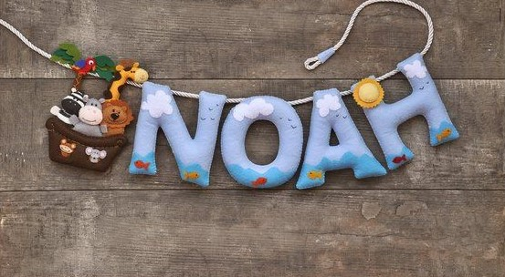

Mi querido bebé debes saber que te recibiremos con mucho amor también, tendrás muchos primos con quienes jugar porque hay demasiados niños varones en la familia, te estará esperando un hermano inquieto, astuto y muy inteligente que seguramente te amará muchísimo ya que tiene el don de cuidar de los demás, nosotros también estamos ansiosos por conocerte, pero seremos pacientes, se ¡bienvenido!, tu nombre será Noah y lo hemos escogido porque nos pareció lindo, suena lindo y tiene un bello significado 😁.
El cuerpo humano es nuestro templo, contiene carne, huesos, sistemas que nos mueven, aulas de recuerdos; de pequeñas películas de tiempos pasados, y aulas de películas que nos muestran el futuro y nuestros sueños. Es un templo lleno de voces que nos dicen como llevar por el camino esta única vida que tenemos. También es un templo que no tiene permanencia: que se deteriora, y a su momento cesa de vibrar- de existir, y se apaga por completo para los que todavía están aquí en la tierra.
Conozco un hombre con ese templo un cuerpo que lucha contra células que quieren apagarle esa luz. Un hombre que no muestra miedo, que sonríe, aunque tenga dolor: que demuestra frustraciones a ratos pero esos son escasos. “No tienes miedo?, Como te mueves con tanta gracia, mientras otros luchan por no mostrar angustia?” Siento que por circunstancias has dejado de vivir hasta el máximo, y has dejado de hacer lo que te gusta. Siento mucho que tu música no se escuche, que tus pueblos se sean visitados, y que tu radio no este prendido.
Los pájaros siempre cantan visitan como fieles peregrinos al hombre que no les falla con su comida, y sus dulces palabras. Un hijo ejemplar, que visita a su madre, como sus pájaros lo visita a el. Sin esperar nada a cambio sino la gratitud de la compañía al lado de la persona que ha querido. Un compañero tierno, y comprensivo a lo mejor no el hombre romántico, pero si el que nunca ha fallado.
La vida es corta. Es una sola. Pero día a día se crean cosas permanentes en ella: recuerdos y pequeñas películas que no se borrarán nunca.
Ese hombre valiente es un ejemplo para mi donde la perseverancia, la nobleza y la buena voluntad a la vida misma, nos alarga mas nuestra estadía. Vivir es fabuloso, pero muchos que estamos “vivos”, no sabemos hacerlo del todo bien. Apreciar lo que tenemos, sentir que somos im-permanentes, para poder vivir el ahora: es lo único cierto, lo único verdadero: el YA. El pasado no existe, y el futuro tampoco. Solo tenemos este momento para realmente contemplar la belleza de la vida. Eso se aprende con el recorrido del camino, y con hombres como mi “valiente” que lo enseña sin saber…
Este hombre ahora esta volando con sus pájaros, visitando a su madre y familia que también están con él. Lo extraño mucho, y a veces cuando veo un pájaro cantando, lo saludo porque se que mi “valiente” esta cantando también.